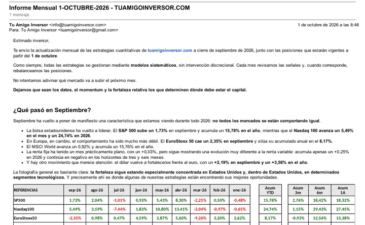
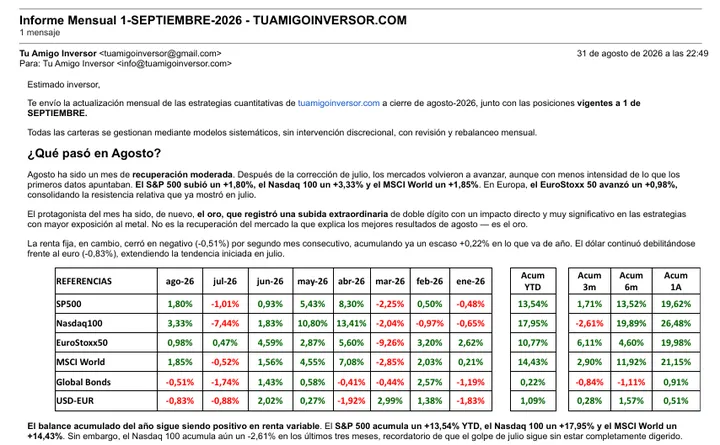
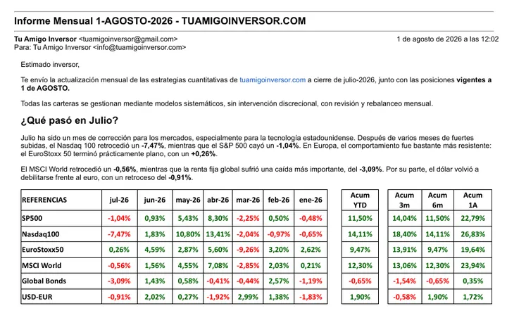
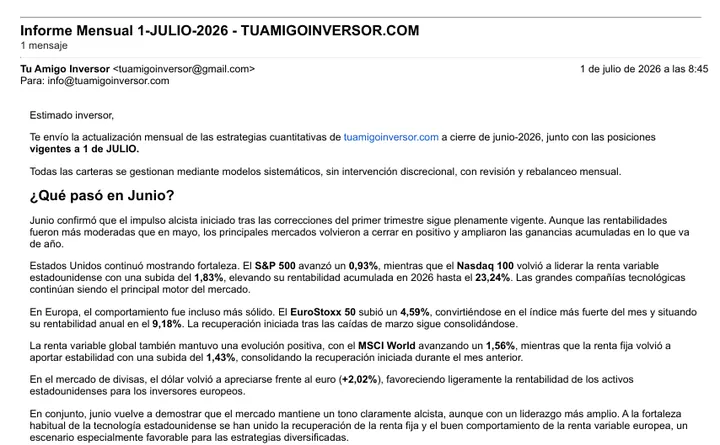

Así es lo que llega al correo
Los informes ya enviados, tal cual salieron. Sirven para ver el formato y para comprobar que lo que cuenta el registro se dijo en su día.

Informe de noviembre de 2026
Enviado el día 1. Posiciones de noviembre y resultados hasta el mes anterior.

Informe de octubre de 2026
Enviado el día 1. Posiciones de octubre y resultados hasta el mes anterior.

Informe de septiembre de 2026
Enviado el día 1. Posiciones de septiembre y resultados hasta el mes anterior.

Informe de agosto de 2026
Enviado el día 1. Posiciones de agosto y resultados hasta el mes anterior.

Informe de julio de 2026
Enviado el día 1. Posiciones de julio y resultados hasta el mes anterior.
Quedan 12 informes anteriores por subir (desde julio de 2025). El de cada mes llega a los suscriptores el día 1; aquí lo subo a mediados de mes.
Recibe el informe el día 1
Un correo al mes con qué tengo en cada cartera, qué cambio y cómo fue el mes anterior. Lo lees y decides tú.
- Es gratis.
- Un correo al mes, el día 1. Sin ofertas ni cursos.
- Te das de baja con un clic desde cualquier correo.
- Recibes la cartera el día 1. La web no la recoge hasta mediados de mes, entre el 10 y el 15.
Antes de apuntarte puedes ver los informes ya enviados.